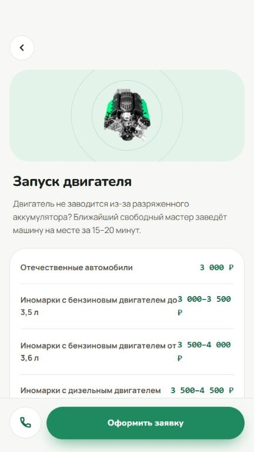

Кейс 05 / Android · RuStore
Сигнал Онлайн
Приложение для вызова техпомощи в Москве и Московской области. Пользователь выбирает услугу, указывает автомобиль, адрес и описание ситуации.
Открыть в RuStore ↗

Что реализовано
Оформление заявки
Данные об автомобиле и месте передаются диспетчеру. Он согласует стоимость и время выезда. Для подачи заявки регистрация не требуется.
Обновление прайса
Приложение получает цены с сайта. Если связь пропала, можно посмотреть последний сохранённый прайс.